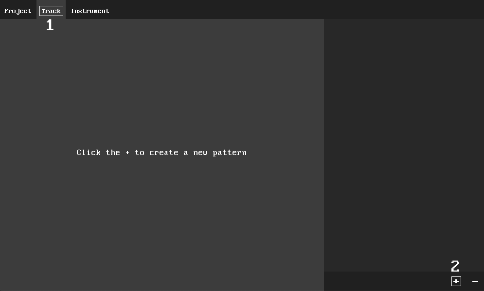
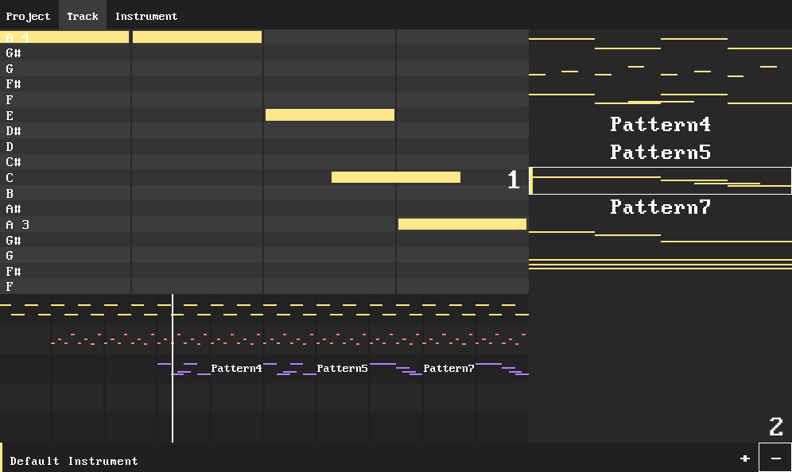
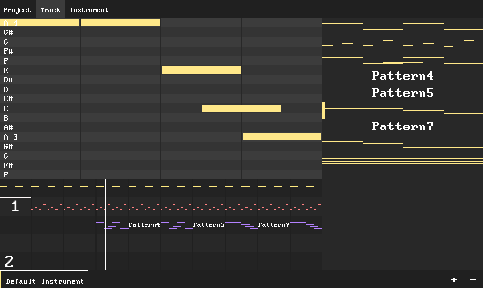

Track Page
The Track page is used to write your song.
Patterns
In Tonnoform, songs are made of Patterns. To create a Pattern, navigate to the Track tab[1] and press the plus in
the bottom right corner[2].

The new pattern will be added to the pattern list. You can select a pattern[1] by clicking on it. You can then delete it
by pressing the minus in the bottom right corner[2].

To edit a pattern, select it. To add a note, click and drag in the Pattern editor. To extend / shorten a note,
click and drag on a note. To remove a note, right click it. To scroll the Pattern editor up / down, use
the up / down arrow keys.
Sequencer
The Sequencer is used to arrange patterns into a song. The Sequencer is the panel at the bottom of the screen. To add a pattern
to the Sequencer, select the pattern and click
where you want to place the pattern[1]. The added pattern will use whichever instrument you have selected[2]. To remove
a pattern from the Sequencer, right click it. To switch the selected instrument, click on the instrument name in the bottom
left corner[2].

You can pause / play by pressing space. To scroll the sequencer, use the left / right arrow keys.